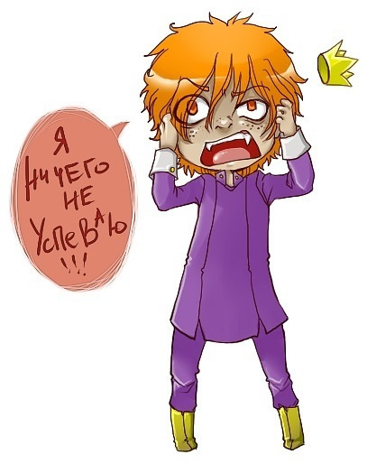
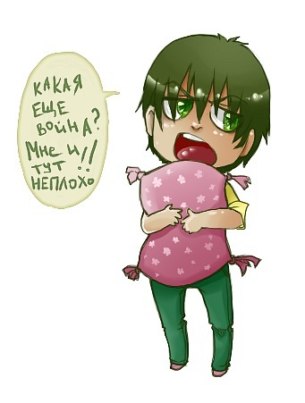
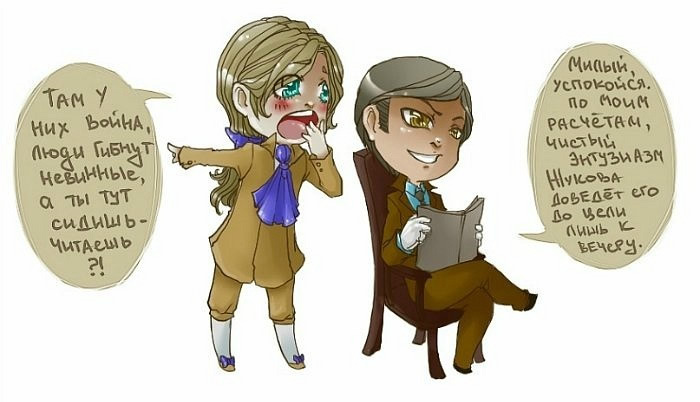

Кто вы? Рационал или Иррационал?
Иррациональность
Итак. Вас интересует, чем отличается Рациональный от Иррационального? Это очень просто. Что делать? Идите в гости. Лучше в выходной. Желательно с утра. И, самое главное, без предварительного телефонного звонка. Пришли? Звоните. Что Вам говорят? Сейчас халатик наброшу? А Вы слышите, что одной рукой набрасывается халатик, другой дается кому-то подзатыльник и что-то спешно распинывается ногами по углам? Добро пожаловать в гости к иррациональному! Да, ботиночки можно вот сюда, в уголочек, только сами запоминайте, куда их ставите, иначе, если собака не съест или дети с балкона не сбросят — сами уйдут. Уйдут — уйдут, у нас тут, знаете, все как-то ходит. Петелечки нет на Вашем пальто? Мелочи, мы уже забыли, как они выглядят. Вот сюда, пожалуйста... Да, вот так и живем... Ну, что ж, ремонт, конечно, собираемся, да вот не решили, когда начать, то ли на той неделе, то ли года через полтора.
Хозяин? Обещал быть вчера, ждем послезавтра. Да все хорошо. Телевизор вот купили. Да, дорогой. Ну, где-то подзаняли, что-то подпродали. Хороший. Дети, правда, без нас его настроить решили. Не получилось у ребятишек. Да, не показывает, к сожалению. Вот, думаем, может, новый купим. Этот? Детям же надо с чем-то играть. Технику, да, очень любят. Чайку? У нас, правда, чашечки разные и сахара нет, но чаек хороший, индийский. Знали бы, что в гости зайдете, подготовились бы. Неудобно как-то. Мы, вообще-то, планировали сегодня в деревню, да, знаете, к старикам, к природе, да вот не сложилось. Да что-то настроение не то, решили дома, семьей. Вот Вы пришли, тоже радостно. А как у Вас? Все хорошо? А мы тут решили спортом заняться, как в телевизоре «Мама, папа, я — спортивная семья». Да, даже уголок купили спортивный. Что-то в нем не то, правда, было, бракованный, наверное, младшенький как полез, так и упал. Да, вывих. Так предупреждала же я их, спорт, он еще никого до добра не доводил! Что, уже уходите? Что ж так скоро? Три часа уже прошло? Надо же, а я на рынок собиралась, ну ничего, завтра схожу. Да. Вы заходите почаще, мы тут по-простому, посидим, поговорим, заходите.
И выходишь на улицу, и голова как-то сама собой гордо поднимается и думаешь: «Черт возьми, хорошо-то как! Не один я такой!».
Рациональность
Иногда, он, рациональный, конечно, позволял поспать себе подольше. Минут на семь. Но вставал виноватый и день летел к черту. Кофе каждый день ни к чему, потому что, во-первых, можно привыкнуть, а во вторых, надолго не хватит. А тратить деньги он не любил. Вернее, любил, но не просто так.
Двадцать три с половиной минуты уделив утренней гимнастике, он с удовольствием ушел в душ, не включая света. Зачем? Себя он видел уже неоднократно, а что где лежит — голова еще не вспомнила, а руки уже взяли. Да и опять же экономия. И не жадный он вовсе. Просто ни к чему пользоваться чем-то, без чего можно обойтись. Кажется, день обещал быть удачным. Даже автобус подошел вовремя, сэкономив минут двадцать времени. Куда же его теперь деть? Смотреть на витрины он не любил и газета на ходу не читалась. Взгрустнулось. До утреннего чая оставалось сорок две минуты, но почему-то уже хотелось есть. Подумав о том, что эти минуты будут трудными, он приступил к работе. Больше всего он не любил, когда его отвлекают. Тогда разбегались все мысли и собрать их опять было сложнее, чем придумать новые. Но были священные минуты перерыва на обед и окончания трудового дня. Аккуратно сложив чистые листочки к чистым листочкам, наполовину исписанные листочки к наполовину исписанным, сломанные карандаши в красную коробочку в правом верхнем углу стола, очинённые в стаканчик, линейку в средний ящик, скрепочки к скрепочкам, кнопочки к кнопочкам, папочки к папочкам, точилку для карандашей сначала в пластмассовый футлярчик, а потом рядом с красной коробочкой в правом верхнем углу стола, ластик рядом с линейкой в средний ящик, ручки уложив в последовательности красная, черная, синяя, зеленая — в кожаный футлярчик и рядом с точилкой для карандашей, которая лежала рядом с коробочкой красной в правом верхнем углу стола, закрыл сначала верхний ящик, затем средний, затем нижний, встал, придвинул стул к столу, выключил лишние электроприборы, поправил галстук, пригладил волосы, смахнул пыль с начищенных туфель и вышел к чаю. День обещал быть радостным.
| Рациональность | Иррациональность | |
|---|---|---|
| Планирование | Предпочитает возможность спланировать свою работу и работать по плану | Лучше приспосабливается к меняющимся ситуациям, корректиирует план по ситуации |
| Принятие решений | Стремится заранее принять решение по каждому этапу. Оберегает принятое решение | Формирует промежуточные решения, корректирует их в процессе выполнения |
| Последовательность действий | Делает последовательно одну работу за другой, ритмично, стабильно | Любит делать несколько дел сразу, параллельно, в меняющемся ритме |
| Жизненная позиция | Старается обеспечить стабильность, предсказуемое будущее | Лучше адаптируется в меняющемся мире, использует новые возможности |

Кто Вы? Сенсорик или Интуит?
Основная разница между сенсорным и интуитивным состоит в том, на сколько они присутствуют в мире реальных объектов. Сенсорный тип присуствтует в реально мире всегда, и независимо ни от чего, его сознание фиксирует все, что касается объектов или же своих ощущений. Интуитивный обычно пребывает в каком-то ином мире, и его сознание, соответственно, в мире реальном присутствует лишь частично. Вообще, интуитивного очень легко отличить от сенсороного как раз по вот этому вот отсутствию. Восприятие интуитивным реального мира предметов и веще - крайне схематичное. Интуитивный, войдя в комнату, может заметить, что где-то там стоит стол. При этом в его сознании зафиксируется некий абстрактный стол, без формы, размеров, цвета и т.п. ( естественно, если кто-то по каким-то причинам специально не обратит внимание интуитивного на этот стол и на соотв. его характеристики, в дальнейшем, не буду этого повторять каждый раз ) Соответственно, в дальнейшем, такое абстрактное восприятие объектов проявляется в том, что интутитивный идя куда-то, погруженный в свои раздумья, лекго может войти в этот самый стол или споткнуться неизвестно откуда взявшийся стул или прочие предметы обстановки, которые в абстрактной схеме интуитивного либо вообще не находятся. Интуитивным свойственно не замечать объекты. Интуитивный может снять одежду, и сразу же забыть о ней, особенно, если что-то отвлекло внимание, переключив сознание в свое обычное интуитивное состояние. Интуитивный может пройти мимо человека и не запомнить ни то, как он выглядит, ни то, что на нем было одето ( опять же, фиксируется факт наличия человека, факт наличия у человека одежды - все остальные малозначительные и несущественные детали, типа цвета, фирмы, вида одежды, прически и т.п. подробности опускаются, проходя мимо сознания ) Интуитивный может не замечать изменения обстановки в его квартире или квартире своих друзей ( один раз у него уже зафиксировалась схема, плюс, он знает, что обстановка обычно не меняется, соответственно, внимание на это не обращается ) Естественно, это проявляется в том, что интуитивным легко задевает предметы, сшибая их руками, ногами, ударяясь о них головой, и производя прочие разрушения. Сенсорным, естественно, это не свойственно. Даже если сенсорный и забывает какие-то детали, его сознание тем не менее все прекрасно фиксирует, и не позволят телу врезаться в столы-стулья, не позволит не заметить появления новых предметов в обстановке. В отличие от интуитивного, у которого в сознании фиксируется лишь абстрактная картинка, в которой зафиксированы лишь названия, картинка сенсорного как раз наполнена деталями, часто на столько детальными и подробными, что позволяют легко восстановить все до мельчайших деталей.
Теперь, собственно, о невербальных проявлениях:
Походка
Походка сенсорного - это заглядение. Движения ноги сенсорного в каждый момент времени, в каждой точке траектории наполнено. Если у интуитивного походка точно такая же абстрактная, как и все остальное, т.е. задана некоторая программа - сейчас нога в точке А, надо передвинуть ее в точку Б. Что там произойдет по пути - уже неизвестно. Соответственно, нога на протяжении траектории как бы вообще не контролируется, что внешне может выглядеть как какая-то неуверенность: непонятно, что в следующей момент станет с ногой. Нога как бы подвешена в воздухе, и ее что-то тянет, помимо даже ее воли. У сенсорного контроль сознанием этой самой ноги идет постоянно. Походка обычно уверенная, впечатления, что нога не знает куда она встанет или что с ней станет в следующий миг, естественно, не возникает. Походки сенсорных наводят на мысль, что в их теле какой-то стержень, походки интуитивных напоминают как будто вешалка с одеждой передвигается. В походках сенсорных всегда задействовано все тело, движутся и руки, и ноги, и тело участвует в движении, при этом все это гармонично, слитно, в едином движении, которое, опять же, не создает сомнений в том, что является полностью подконтрольным. Походки интуитивного могут напоминать либо нечто, что тащут вперед ноги. Руки и ноги могут двигаться нескоординировано. Руки могут просто так болтаться, как бы подвешенными. Тело может отставать или наоборот, опережать ноги. Крайний случай сенсорной походки - это походки манекенщиц на подиуме. Крайний случай интуитивной походки - это походка Пьера Ришара. Попробуйте пообращать внимание на то, как перемещаются в пространстве ваши знакомые, и возможно, это станет понятнее ( проще показать, чем объяснить)
Посадка
Интуитивный, садясь, фиксирует лишь факт, что под ним есть нечто, на что можно сесть. Легко может ошибиться с оценкой высоты это нечто, и в результате плюхнуться, не рассчитав (даже сесть мимо) Сидя интуитивному обязательно надо подпереть как-то свое тело. Вообще, тело как бы ему неподкрольно, и его надо как-то пристроить, чтобы оно не мешала. При этом именно такое впечатление со стороны посадки сенсорного и производят, как будто куль уложили на стул или положили в кресло. И нечто это так как-то и развалилось в том, куда его положили. Посадка сенсорного, опять же, абсолютно контролируема. Это движение, в котором не может быть ошибки. Сев, сенсорный продолжает свое тело контролировать, он точно знает, куда ему сесть, и как себя в кресле или стуле расположить. Никакого впечатления куля. Сенсорный как бы наполняет стул самим собой, и в отличие от интуитивного, посадка которого напоминает как будто что-то как-то плюхнули, не особо заботясь, как оно там лежать будет, в посадке сенсорного не будет возникать сомнений, что сенсорный выбрал себе такое положение, которое ему максимально удобно.
Стойка
Аналогично, когда интуитивный стоит, может возникнуть ощущение, что он вообще сейчас упадется, или в любой момент из под него может исчезнуть опора. Его тело может напоминать, как будто нечто висящее, или наоборот, что-то весьма неустойчивое, что держится лишь за счет ног. Стойка сенсорного крайне устойчивая. Опять же, все тело - едино. Ощущение, что нечто размещено на ногах ни в коем случае не возникает, наоборот, видно, что все тело представляет собой единое целое. Интуитивный всегда норовит на что-то облокотиться, присесть, прислониться. Сенсорный особенно какой-нибудь Жуков) может производить впечатление монолита, который врыли в землю. Любопытно, как сенсорные и интуитивные располагаются в пространстве, особенно в группе. Интуитивные могут как-то так сбиться в кучку, начать толкаться, им непонятно, как им луче себя разместить. Сенсорные же очень хорошо контролируют пространство вокруг себя. Если вы поставите 10 человек в ряд, то очень вероятно, что 3 сенсорных будут заниматься столько же пространства, сколько 7 интуитивных. Интуитивные как бы не контролируют свое пространство, с точки зрения размещения себя в нем. Они легко жертвуют его, или же им даже неудобно, если вокруг них образуется его слишком много, когда все остальные теснятся. Еще у интуитивных бывают такие странные проблемы, как куда деть руки, куда встать и т.п.
Обращение с предметами
Сенсорные очень уверенно обращаются собъектами. Они легко могут взять стул и поставить туда, куда считают нужным. Передвинуть вещи на столе ( даже не своем ), поправить воротник не своем знакомом, похлопать по плечу и т.д. Интуитивный обращается с объектами крайне осторожно. Скорее всего, интуитивный сядит на стул там, где стоит этот самый стул, или вообще не будет садиться, на что-то облокотясь. Интуитивный может испытывать некое внутреннее нежелание делать что-либо с вещами на столе, считая, что пусть уж остается как есть. Интуитивный вряд ли будет похлопывать по плечу своих знакомых, равно как и поправлять на них одежду. Если поведение сенсорного демонстрирует как бы власть над объектами, и свободу проявления себя по направлению к этим объектам, то интуитивный наоборот, демонстрирует даже некоторую неуверенность и отсутствие свободы проявления себя по направлению к объектам. Интуитивный предпочитает ничего не изменять в том, каковым является объект, оставляя его в таком виде, в каком он есть, и скорее пожертвовав своим удобством, чем сделав что-то с объектом. Сенсорный не испытывает никакой боязни перед вещами. Покупая, например, одежду, он не просто возьмет ее и померяет, а осмотрит со всех сторон, попытается подвернуть там, я не знаю, рукава, что-то с ней такое сделать и посмотреть, как это будет выглядеть. Понятно, что сенсорные умеют и любят работать с объектами, вещами, придавая им то состояние, которые они считают нужным (починить что-то, разобрать, а потом собрать, подшить одежду, ушить и т.п.) Интуитивные же, опять же, делают это крайне неуверенно и неохотно.
Резюмируя: обычно, очень легко сказать интутивный человек или сенсорный, просто посмотрев на то, как он ходит, как стоит, как сидит. Основное, на что надо обращать внимание - это на то, как человек контролирует свое тело, поконтрольно ли оно ему, или же его сознание находится где-то там, в непонятных далях, где интуитивные проводят основную часть своего времени, предоставляя тело самому себе. Вообще, интуитивность невербально проявляется в отсутствии сенсорности.
| Интуиция | Сенсорика | |
|---|---|---|
| Характер восприятия | Глобальный | Локальный |
| Легче ориентируется | Во времени | В пространстве |
| Характер мышления | Абстрактный, теоретический | Конкретный, практический |
| Жизненная позиция | Поживем-увидим | Здесь и теперь |
| Эффективность | В необычном, непонятном | В том, что проверено и надежно |
Кто вы? Логик или Этик?
Этика
Сказать о том, что этик прекрасно разбирается в отношениях между людьми — значит ничего не сказать об этике. Он не просто разбирается. Он великолепно чувствует отношение других к себе, отношения людей между собой. Собственно, он не просто смотрит и изучает, он активно их моделирует. Было бы неверно предположить, что этики безусловно и всегда вежливы и приятны в общении. Да, конечно, но только тогда, когда им это нужно. В общем-то, они довольно легко ссорятся, мирятся, легко говорят о своих отношениях, чувствах другим. Установление психологической дистанции, любовь, дружба, симпатия, теплота, общительность и в то же время холодность, отчужденность, зло, безжалостность. Они просто воспринимают мир через отношения или чувство, эмоцию. Как и отношения между людьми, так и эмоции людей представляют для них ценность, будь они положительными или отрицательными. Если попытаться сравнить людей, то они как небесные тела: есть источники света и есть отражатели, те, которые сами не светят, но передают свет других. Этики — это своего рода светила, генераторы отношений, эмоций, которые распространяются всем и многие с благодарностью их принимают, впитывают и шлют дальше, отразив в них частичку своего тепла и своей души. И это могут быть эмоции радости или печали, воодушевления и депрессии, оптимизма, счастья, смеха и плача, пессимизма, недовольства. И все-таки...
О, весна без конца и без краю — Без конца и без краю мечта! Узнаю тебя, жизнь! Принимаю! И приветствую звоном щита.
Логика
Если представить, что логик начал писать стихи, то думаю, что получится что-то типа: «Перфолентой течет жизнь и глобальна моя печаль». А, может быть, вот так:
Я люблю тебя, вечность, Единица плюс бесконечность. И терзаюсь, как корень из тридцати девяти, Не могу пройти Мимо твоего дома, Невозмутимо, Как бином Ньютона.
У меня логики почему-то ассоциируются с. калькулятором: два пишем, три в уме. Некоторые из них живут в системе строгой иерархии и если в ней нет места факту — тем хуже факту. Да и занимаются они чем-нибудь таким: функционирование, организация, показатели, отчетность, выбор лучшего варианта из нескольких уже имеющихся. Основа жизни — формально-логические соотношения, организация, официальные отношения людей, аппарат. Вот они все знают. Что, почему, как, зачем, каким образом, и что из этого получится. Великолепно ориентируются в фактах, событиях, их причинно-следственной связи, легко отделяют главное от второстепенного. Оценивая людей, они руководствуются принципами «разумно-неразумно», «деловой-неделовой», достаточно ли логично действует человек, решая собственные проблемы. Если логику доведется побеседовать с кем-нибудь, то в отличие от этика, который будет уговаривать или ругаться, логик будет спокойно, оперируя фактами и цифрами, доказывать целесообразность или нецелесообразность того или иного поступка. Вот о чувствах не говорят. То ли стесняются, то ли не знают, что это такое, ведь «голосом разума» их не проверить. И все-таки, с ними лучше, чем без них.
| Логика | Этика | |
|---|---|---|
| Ход мышления | Аналитический, беспристрастный | Оценочный, причастный |
| Стиль | Рассудочность, доказательство | Эмоциональность, убеждение |
| Деятельность, ведущая к успеху | Организация процессов, структур, разработка схем и технологий | Работа с людьми, образами, эмоциями, челоеческими отношениями |
| Оценивают людей в работе | По квалификации, по результату | По участию, старанию |
| Ориентация на | Дело, справедливость, законы | Людей, гуманность, ценности |
Кто вы? Экстраверт или Интроверт?
Экстраверсия - интроверсия
Помните знаменитое Ленинское «От живого созерцания — к абстрактному мышлению и от него к практике»? Так внутренне работает экстраверт. То есть то, что происходит вокруг меня — это и есть объективная реальность, а я — лишь ее часть, частичка, и жизнь моя всецело зависит от того, что происходит вокруг. Может быть, именно поэтому для экстравертов бытие определяет сознание, а не наоборот. Экстраверт не то чтобы нивелирует собственную личность, просто он смотрит на нее как бы через призму вечной объективности. Да вспомните древних: Я — песчинка, ты — песчинка, и наша Земля — песчинка мироздания, летящая неведомо куда, существует только Космос, Мир, Природа, Бог и мы зависим от них и т. д. И совершенно иной взгляд: это Я — Космос, это Я — Галактика, и нет ничего более объективного, чем то, что происходит со мной, ведь я это вижу, слышу, ощущаю, это со мной всегда, а этот призрачный мир. Ну кто докажет, что когда я закрываю глаза, он не рушится, не исчезает, а может быть это только мое воображение, моя фантазия.
Экстраверт необходимый стимул для внутренней работы получает извне, перерабатывает его внутри и выдает опять во внешнюю среду, как бы находя подтверждение или опровержение своей внутренней работе. То есть объективная реальность является первичной, а свое внутреннее как бы потом. А подчас даже игнорируется. Экстраверты обычно болеют мало, но сильно, так как до тех пор, пока можешь ходить это как бы и не болезнь. И знаменитое «общественное выше личного» — тоже о них. Жертвовать собой и в прямом и в переносном смысле, отдавать себя чему угодно, но не себе — это экстраверт.
Интроверт как-то больше доверяет своему внутреннему. «Душа, душа, чего ты хочешь?» Здесь более ценятся свои мысли, чувства, желания.
Очень по-разному экстраверт и интроверт общаются с людьми. Для экстраверта люди — объекты. И если объект в чем-то не подходит, он достаточно легко заменяется другим. То есть значимость отношений между объектами для экстраверта невелика. «Подумаешь, ушла, да я себе в десять раз лучше найду» — скажет экстраверт и найдет. Для интроверта же главное — отношение. Ему довольно сложно их налаживать, и, наверное, поэтому он так бережлив. Он всегда пытается что-то исправить и восстановить. Мир интроверта держится на отношении.
| Экстраверсия | Интроверсия | |
|---|---|---|
| Мотивирующая сила | Принадлежит объектам внешнего мира | Идет изнутри |
| Преимущественная ориентация | На мир вне себя | На свой внутренний мир |
| Ценности | Объективная реальность, объекты | Субъективные отношения с объектом |
| Приоритеты | Дело | Отношения |
| Поведение | Определяется внешней ситуацией, объективными законами | Определяется собственными установками, субъективными ощущениями |
| Речь | Легче устная | Легче письменная |
| Контактность | Стремятся к поиску объекта, взаимодействию с ним. Обращают внимание и на себя, и на других | Ожидают включения в контакт, поддерживают отношения. Ждут, чтобы на них обратили внимание |
| Динамика | Легче срываются с места, переезжают, разродятся | Хранят семью, компанию, место работы |
| Взгляд на работу | Как на ответственность за дело | Как на обязанность выполнить положенное |
| В работе предпочитают | Организовать других, взять ответственность на себя, поручить, расставить по местам | Выполнить порученное своими силами. Уединение, камерный стиль |
| С удовольствием | Начинают дело | Завершают дело |
| Мотивация к деятельности | Уникальность, престиж | Интерес к работе, благосостояние |
| Рекламируют | Конкретных людей или себя | Команду, фирму, частью которой является |
| Источник энергии | Подзаряжаются энергией в общении | Предпочитают одиночество для восстановления энергии |